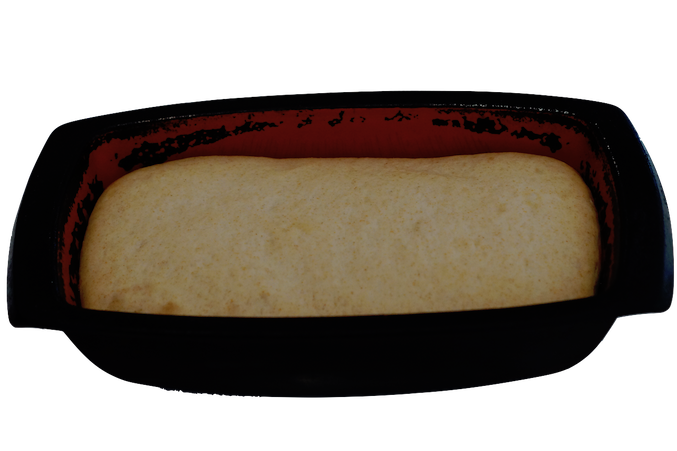

In the morning - mix the base
1. Mix in a bowl:
- A couple of spoons of sourdough
- 130g white flour
- 170g lukewarm water

2. Now cover with 390g flour (I use 2/3 white, 1/3 wholemeal) but don't mix.
Leave for the day
Around dinner time - knead
3. Add 210g lukewarm water. Mix to a shaggy mess. Leave for 20 minutes. (This softens the flour and it will need less kneading).
4. Add a little salt, now knead the dough. Put it in a warm place and let rise for 1.5 - 2 hours.
If you're running short of time, you can put this in the fridge until tomorrow, and then continue.
Evening - shape the loaf
5. Punch down the dough and shape into a loaf.
6. Cover, put in a warm place and let rise for 1.5 - 2 hours.
Before you go to bed - bake
7. Bake for 40 minutes at 230C